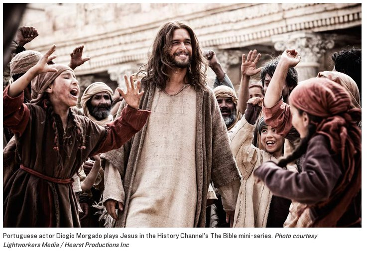

|
|
 |
|
Last month, American television audiences were shocked: when Satan showed up in the History Channel's new mini-series The Bible, he looked strikingly like President Barack Obama. Responses were quick.
Americans care deeply about how biblical figures are represented in the flesh. Whether discussing the darkness (and Obama-ness) of Satan or the 'sexy whiteness' of Jesus, the ethnic 'look' of the characters has been just as important (if not more so) than what they have said or done on screen.
Viime kuussa amerikkalaista TV-sarjan Raamattu yleisöä järkytti kun ruudulla Saatana näytti Barack Obamalta. Siihen reagoitiin heti.
Amerikkalaisille on tärkeää miten Raamatun henkilöt esitetään rodullisesti. Olpa kyse tumaihoisuudesta (Obama-näköisyydestä) tai 'seksikkäästä' Jeesuksen valkoihoisuudesta, etninen näkö on yhtä tärkeä (ellei tärkeämpikin kuin mitä he sanovat.
Kuinka helposti me ajattelemme että Jeesus oli körtti, evankeelinen, viidesläinen ja jokatapauksessa oikea luterilainen.